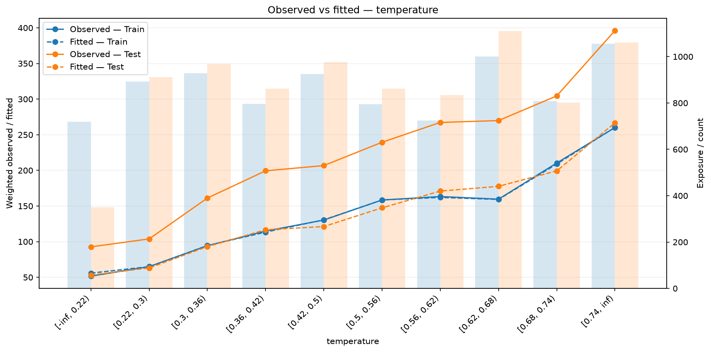
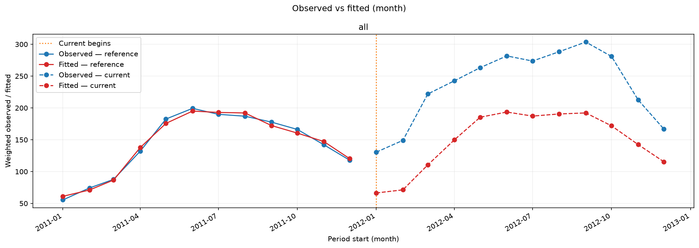
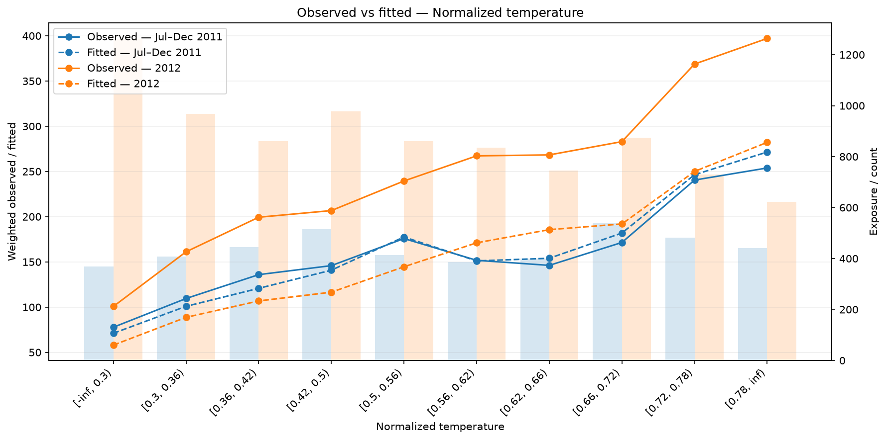

Observed versus fitted¶
Compare actual and predicted weighted means to find segments or time periods where a model systematically overpredicts or underpredicts. Each figure shows train and one held-out sample together. Returned tables include the volume supporting each group.
Prepare predictions¶
Run from the installed repository checkout after the data preparation. The example fits recorded 2011 hours and evaluates 2012 hours. Targets and predictions are rentals per hour. The RMSE model can produce negative predictions; the reports display its raw outputs.
from pathlib import Path
import numpy as np
import polars as pl
from examples.evaluation_data import fit_bike_evaluation
from ml_toolkit.config import FigureConfig
example = fit_bike_evaluation(classification=False)
data, prediction, split = example.data, example.prediction, example.split
train, test = example.train, example.test
train_prediction = prediction[: len(train)]
test_prediction = prediction[len(train) :]
output = Path("figures")
figure = FigureConfig(dpi=150)
print(f"2011 train hours: {len(train)}; 2012 test hours: {len(test)}")
2011 train hours: 8645; 2012 test hours: 8734
Compare feature levels¶
ObservedFitted(features=("temperature",)) requests a temperature report. Its
feature list selects what to show; shared FeatureLevelConfig rules and n_bins
control how levels are learned. Fit levels on train only and apply the same
boundaries to test. Numerical quantiles, categories, missing values, and unseen
categories follow the feature-level rules.
Pass reports to training, or write the
same reports directly from aligned predictions:
from ml_toolkit.config import FeatureLevelConfig
from ml_toolkit.evaluation import ObservedFitted, TimeObservedFitted
features = (FeatureLevelConfig("temperature", "numerical"),)
reports = [
ObservedFitted(features=("temperature",)),
TimeObservedFitted(period="month"),
]
for report in reports:
files = report.write_artifacts(
data=data,
prediction=prediction,
split=split,
artifact_dir=output / report.name,
figure=figure,
features=features,
n_bins=10,
)
print([path.relative_to(output).as_posix() for path in files])
['observed_fitted/000_temperature.png']
['time_observed_fitted/time.png']

The x-axis is the ordered feature level. Curves show weighted observed and fitted means for train and test; bars show total row weight. A curve above the observed mean indicates overprediction. A sparse group's mean is less well supported. Here fitted train means closely follow observations, while fitted test means fall below observed rental demand across most temperature levels. Missing levels and groups with zero total weight have zero volume and no mean.
Get the aggregate table with the direct function:
from ml_toolkit.feature_levels import LevelTransformer
from ml_toolkit.plots import regression
levels = LevelTransformer(features, n_bins=10).fit(train.X)
train_levels, test_levels = levels.transform(train.X), levels.transform(test.X)
assert levels.feature_levels is not None
by_level = regression.observed_fitted_by_level(
train_levels["temperature"],
train.y.to_numpy(),
train_prediction,
test_levels["temperature"],
test.y.to_numpy(),
test_prediction,
output / "direct-observed-fitted.png",
level_order=levels.feature_levels[0].levels,
feature_name="temperature",
reference_weight=train.weight.to_numpy(),
current_weight=test.weight.to_numpy(),
current_label="Test",
figure=figure,
)
print(by_level.head(5).round(2).to_string(index=False))
print(by_level.groupby("sample")[["volume"]].sum().to_string())
sample level observed fitted volume
reference [-inf, 0.22) 51.63 55.86 720.0
reference [0.22, 0.3) 64.96 64.98 892.0
reference [0.3, 0.36) 94.29 94.58 929.0
reference [0.36, 0.42) 114.84 113.37 796.0
reference [0.42, 0.5) 130.35 130.63 925.0
volume
sample
current 8734.0
reference 8645.0
The pandas table uses reference/current sample keys even when the legend says
Train/Test. During training, O/F and PSI use separate LevelTransformer instances
fitted on the same training rows, ReportingConfig.features rules and
ReportingConfig.n_bins. PSI reuses its model baseline transformer when packaging
is enabled. O/F and PSI produce identical levels for matching features, but do
not share fitted state with each other. A direct
LevelTransformer fit also reproduces those levels when both its reference
data and settings match. See how levels are shared
for fitting and reuse across samples and folds.
features=None displays all shared feature definitions; an empty selection
produces no feature figures. Explicit unknown feature names raise an error.
Compare calendar periods¶
TimeObservedFitted(period="month") summarizes targets and predictions by
recorded calendar period. The lines show weighted means; the returned table
also reports total weight. TimeObservedFitted(by=("season",)) creates a
separate panel for each exact-value group. Names may refer to Pool.X or
Pool.auxiliary_features. Multiple names group by their combinations; an empty
tuple gives an overall plot. For continuous values, prepare a categorical band
column as shown in the data guide.
max_groups=50 limits the number of combinations across train and held-out rows.

The time plot's legend uses reference/current for the two samples. Here those mean 2011 train and 2012 test. Dates, timezone, ordering, and incomplete periods follow the shared temporal rules.
temporal = regression.time_observed_fitted(
train.time.to_list(),
train.y.to_numpy(),
train_prediction,
test.time.to_list(),
test.y.to_numpy(),
test_prediction,
output / "direct-time-observed-fitted.png",
reference_weight=train.weight.to_numpy(),
current_weight=test.weight.to_numpy(),
period="month",
figure=figure,
)
print(
temporal[["period_start", "split", "observed", "fitted", "volume"]]
.head(6)
.round({"observed": 2, "fitted": 2})
.to_string(index=False)
)
print("Monthly groups:", len(temporal))
period_start split observed fitted volume
2011-01-01 reference 55.51 61.14 688.0
2011-02-01 reference 74.29 71.09 649.0
2011-03-01 reference 87.73 86.73 730.0
2011-04-01 reference 131.95 137.63 719.0
2011-05-01 reference 182.56 175.70 744.0
2011-06-01 reference 199.32 195.05 720.0
Monthly groups: 24
Metrics by group¶
GroupedMetrics applies an ordinary metric function to each group and split.
It accepts the same exact-value by selection as the time report, independently
of shared numerical level settings. No metric function changes are required.
from ml_toolkit.evaluation import GroupedMetrics
from ml_toolkit.metrics import metrics_regression
grouped_report = GroupedMetrics(
name="metrics_by_season",
metric=metrics_regression,
by=("season",),
min_rows=30,
)
grouped_table = grouped_report.calculate(
data=data, prediction=prediction, split=split
)
assert grouped_table.filter(pl.col("status") == "ok").height > 0
Pass this evaluator through prediction_evaluators to log finite scalar scores
and upload metrics.parquet beneath its report name. The table preserves typed
grouping columns and includes group_id, split, n_rows,
n_positive_weight_rows, sum_weight, metric, value, and status.
group_id identifies the same group across splits within that report; identifiers
are local to the report and are not persistent segment IDs across folds.
min_rows=1 by default counts positive-weight rows. Each represented split
includes every observed group, even if that split has no rows in the group.
Statuses are ok, empty, zero_weight, insufficient_rows, or undefined.
Skipped and nonfinite results have null values; if every group is skipped,
metric names are null too. A single-class group's ROC AUC is undefined, while
its other valid scores remain available. Exceptions raised by the metric
function propagate with report context. Only finite scores are logged under
<name>/<split>/<group_id>/<metric_key>; the table retains original metric names.
Unusual metric names are encoded into collision-free tracking keys.
Grouping column names must not conflict with the table's metadata columns;
give such a diagnostic column a distinct name before grouping.
Grouped metrics are additional diagnostics, including on train-only fits. They do not change training metrics, CV averages, or optimization objectives.
GroupedMetrics
dataclass
¶
GroupedMetrics(
*,
name: str = "grouped_metrics",
metric: Metric,
by: tuple[str, ...],
min_rows: int = 1,
max_groups: int = 50
)
Bases: PredictionEvaluator
Calculate an ordinary metric separately for exact-value groups and splits.
Parameters:
| Name | Type | Description | Default |
|---|---|---|---|
metric
|
Metric
|
Callable accepting aligned target, prediction and weight arrays and returning an object with to_dict(). Exceptions propagate unchanged. |
required |
by
|
tuple of str
|
Nonempty model/auxiliary grouping columns. Multiple names select combinations. Prepare a categorical band column for continuous values. |
required |
name
|
str
|
Unique report name and artifact namespace. |
'grouped_metrics'
|
min_rows
|
int
|
Minimum number of positive-weight rows required to calculate metrics. |
1
|
max_groups
|
int
|
Maximum distinct groups across all supplied splits, including missing. |
50
|
Notes
calculate() returns a typed long table, including empty split/group pairs. Statuses are ok, empty, zero_weight, insufficient_rows, or undefined. Missing results have null values. Only finite results are logged by evaluate. write_artifacts saves metrics.parquet, preserving typed group values and IDs. Instances retain settings only and can be reused across folds.
calculate ¶
calculate(
*, data: Pool, prediction: FloatArray, split: Series
) -> pl.DataFrame
Return per-split/group scores with typed keys, support counts and status.
Groups are determined across the supplied rows. Each represented split receives every group, including those with no rows in that split. Skipped groups have metric=None when no metric names can be determined. Nonfinite scores become null/undefined; metric exceptions are not hidden.
The table exposes period_start for each group. Optional weights affect means
and volume. Feature-level plots use shared n_bins; the time plot has its own
period and does not use feature-level settings.
Compare two held-out periods directly¶
Direct plotting can compare two evaluation periods without including model training rows. This independent Bike model fits January–June 2011; the reference is July–December 2011 and the current period is 2012. Both plotted samples are held out. Fitting feature levels on the reference makes the comparison answer how its relationships generalize to the subsequent year.
from examples.gallery_data import load_gallery_data
_, bikes = load_gallery_data(download_if_missing=False)
reference, current = bikes.reference.features, bikes.current.features
reference_y, current_y = bikes.reference.observed, bikes.current.observed
reference_prediction, current_prediction = (
bikes.reference.prediction,
bikes.current.prediction,
)
from ml_toolkit.plots import regression
from ml_toolkit.config import FeatureLevelConfig
from ml_toolkit.feature_levels import LevelTransformer
heldout_levels = LevelTransformer(
(FeatureLevelConfig("temperature", "numerical"),), n_bins=10
).fit(reference)
reference_levels = heldout_levels.transform(reference)
current_levels = heldout_levels.transform(current)
assert heldout_levels.feature_levels is not None
heldout_by_level = regression.observed_fitted_by_level(
reference_levels["temperature"],
reference_y,
reference_prediction,
current_levels["temperature"],
current_y,
current_prediction,
output / "observed-fitted-levels.png",
level_order=heldout_levels.feature_levels[0].levels,
feature_name="Normalized temperature",
reference_label="Jul–Dec 2011",
current_label="2012",
figure=figure,
)
print(heldout_by_level.groupby("sample")[["volume"]].sum().to_string())
print(heldout_by_level.head(4).round(2).to_string(index=False))
volume
sample
current 8734.0
reference 4395.0
sample level observed fitted volume
reference [-inf, 0.3) 77.76 71.07 369.0
reference [0.3, 0.36) 109.52 100.87 407.0
reference [0.36, 0.42) 135.91 120.76 444.0
reference [0.42, 0.5) 145.87 140.84 515.0

The legend names the actual periods. This direct plot is a reference/current comparison, separate from the train/test evaluator above.
API reference¶
ObservedFitted
dataclass
¶
ObservedFitted(
*,
name: str = "observed_fitted",
features: tuple[str, ...] | None = None
)
Bases: PredictionEvaluator
Compare weighted observed/fitted means on train-fitted feature levels.
Parameters:
| Name | Type | Description | Default |
|---|---|---|---|
name
|
str
|
Unique report name and artifact namespace. |
'observed_fitted'
|
features
|
tuple of str or None
|
Names to display from shared feature definitions. None selects all; an empty tuple selects none. Unknown names raise ValueError. |
None
|
Notes
Fits LevelTransformer on train using the supplied feature rules and n_bins. Each figure compares train with validation or test using the same levels. Lines show weighted means; volume is summed weight. Zero-weight or absent levels have no mean. Saves one indexed feature filename in the report root.
TimeObservedFitted
dataclass
¶
TimeObservedFitted(
*,
name: str = "time_observed_fitted",
period: TimePeriod = "month",
by: tuple[str, ...] = (),
max_groups: int = 50
)
Bases: PredictionEvaluator
Compare weighted time summaries, optionally grouped by exact values.
Parameters:
| Name | Type | Description | Default |
|---|---|---|---|
name
|
str
|
Unique report name and artifact namespace. |
'time_observed_fitted'
|
period
|
TimePeriod
|
Calendar grouping from minute through year, in the data timezone. |
'month'
|
by
|
tuple of str
|
Model or auxiliary columns defining exact-value groups. Multiple columns select combinations. Empty gives an overall plot. Precompute bands for continuous values; no numerical levels are fitted here. |
()
|
max_groups
|
int
|
Maximum distinct groups across both samples, including missing groups. |
50
|
Notes
Compares train with validation or test, with a panel for each requested group.
Observed/fitted means and volumes use row weights.
Timestamps must be ordered across the pair; a shared endpoint is allowed.
Saves time.<format>. Shared feature rules and n_bins are unused.
regression ¶
Observed-versus-fitted diagnostics for continuous targets.
observed_fitted_by_level ¶
observed_fitted_by_level(
reference_levels: Series,
reference_observed: ArrayLike,
reference_fitted: ArrayLike,
current_levels: Series,
current_observed: ArrayLike,
current_fitted: ArrayLike,
save_fig: str | Path,
*,
level_order: tuple[str, ...],
reference_weight: ArrayLike | None = None,
current_weight: ArrayLike | None = None,
feature_name: str = "Feature",
reference_label: str = "Train",
current_label: str = "Validation",
figure: FigureConfig | None = None
) -> pd.DataFrame
Compare weighted observed/fitted means on shared feature levels.
Parameters:
| Name | Type | Description | Default |
|---|---|---|---|
reference_levels
|
Series
|
Non-null level labels produced by the same reference-fitted LevelTransformer. Each series aligns with its sample's values. |
required |
current_levels
|
Series
|
Non-null level labels produced by the same reference-fitted LevelTransformer. Each series aligns with its sample's values. |
required |
reference_observed
|
array - like
|
Nonempty finite targets for each sample. |
required |
current_observed
|
array - like
|
Nonempty finite targets for each sample. |
required |
reference_fitted
|
array - like
|
Finite predictions aligned with each sample's targets. |
required |
current_fitted
|
array - like
|
Finite predictions aligned with each sample's targets. |
required |
save_fig
|
str or Path
|
Output path; parent directories are created. |
required |
level_order
|
tuple[str, ...]
|
Unique fitted labels in interval/category order, including special levels. |
required |
reference_weight
|
array - like or None
|
Finite nonnegative weights with positive total per sample. None uses unit weights. Means use weights and volume is the sum of weights. |
None
|
current_weight
|
array - like or None
|
Finite nonnegative weights with positive total per sample. None uses unit weights. Means use weights and volume is the sum of weights. |
None
|
feature_name
|
str
|
Feature label for the horizontal axis. |
'Feature'
|
reference_label
|
str
|
Legend labels; use current_label='Test' for test diagnostics. |
'Train', 'Validation'
|
current_label
|
str
|
Legend labels; use current_label='Test' for test diagnostics. |
'Train', 'Validation'
|
figure
|
FigureConfig or None
|
Optional shared dimensions, DPI and export format. |
None
|
Returns:
| Type | Description |
|---|---|
DataFrame
|
Columns sample, level, observed, fitted, volume. Samples are reference and current, each in level_order. Levels with zero weight in both samples are omitted. A zero-weight sample/level has NaN means and zero volume. |
Raises:
| Type | Description |
|---|---|
PlotError
|
Values or weights are invalid, lengths differ, levels contain null or undefined labels, or level_order is empty or contains duplicates. |
Notes
Uses supplied labels without fitting or binning. Four lines compare the two samples; missing means break lines. Paired bars show volume on a second axis. Closes the figure after saving. Appropriate target interpretation, including positive-unlabeled targets, is the caller's responsibility.
time_observed_fitted ¶
time_observed_fitted(
reference_timestamp: Sequence[date | datetime],
reference_observed: ArrayLike,
reference_fitted: ArrayLike,
current_timestamp: Sequence[date | datetime],
current_observed: ArrayLike,
current_fitted: ArrayLike,
save_fig: str | Path,
*,
period: TimePeriod = "month",
reference_weight: ArrayLike | None = None,
current_weight: ArrayLike | None = None,
reference_group: Series | None = None,
current_group: Series | None = None,
figure: FigureConfig | None = None
) -> pd.DataFrame
Plot time-based weighted means for two samples and optional groups.
Parameters:
| Name | Type | Description | Default |
|---|---|---|---|
reference_timestamp
|
Sequence[date | datetime]
|
Dates or datetimes aligned with reference observations. |
required |
reference_observed
|
array - like
|
Nonempty finite reference targets. |
required |
reference_fitted
|
array - like
|
Finite reference predictions aligned with targets. |
required |
current_timestamp
|
Sequence[date | datetime]
|
Dates or datetimes aligned with current observations. Their minimum must be greater than or equal to the maximum reference timestamp. A split inside one grouping period is allowed. |
required |
current_observed
|
array - like
|
Nonempty finite current targets. |
required |
current_fitted
|
array - like
|
Finite current predictions aligned with targets. |
required |
save_fig
|
str or Path
|
Output figure path; parent directories are created. |
required |
period
|
TimePeriod
|
Calendar grouping in matching input timezones. Minute/hour require datetimes; weeks start on Monday. Points are at period starts. |
"month"
|
reference_weight
|
array - like or None
|
Finite, nonnegative reference weights with positive total; None uses equal weights. |
None
|
current_weight
|
array - like or None
|
Finite, nonnegative current weights with positive total; None uses equal weights. |
None
|
reference_group
|
Series or None
|
Optional reference group labels; None groups all rows as all. |
None
|
current_group
|
Series or None
|
Optional current group labels; None groups all rows as all. |
None
|
figure
|
FigureConfig or None
|
Optional export dimensions, DPI, and format. None preserves native dimensions and the requested path format. |
None
|
Returns:
| Type | Description |
|---|---|
DataFrame
|
Columns period_start, group, split, observed, fitted, and volume. period_start retains the input timezone; means use weights and zero-weight groups are omitted. |
Raises:
| Type | Description |
|---|---|
ValueError
|
Timezones differ, or the latest reference timestamp exceeds the earliest current timestamp. |
PlotError
|
Vectors are misaligned, timestamps are missing, or numeric values and weights are invalid. |
Notes
Creates parent directories for save_fig and closes the figure after saving. Both samples preserve their matching input timezone during calendar grouping. Missing periods are not filled or interpolated. Supplied group labels select separate observed/fitted curves.